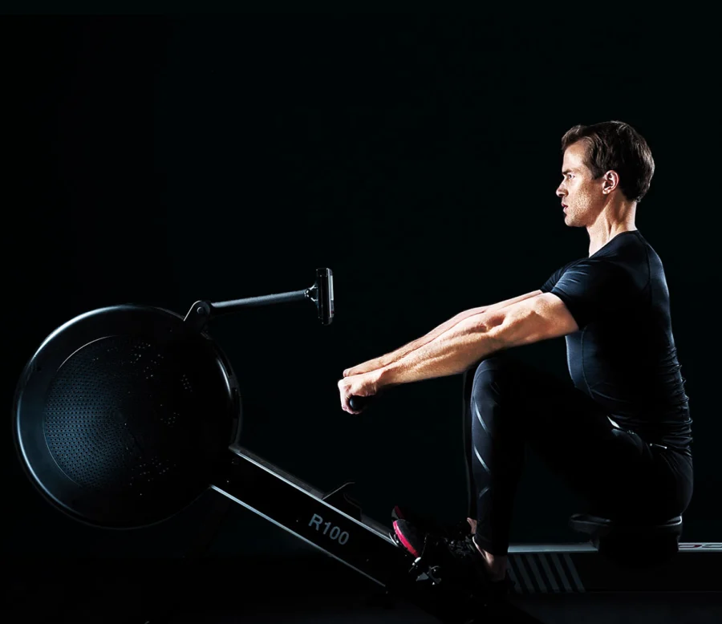

Rowing
Rowing, sometimes called crew in the United States, is the sport of racing boats using oars. It differs from paddling sports in that rowing oars are attached to the boat using oarlocks, while paddles are not connected to the boat. Rowing is divided into two disciplines: sculling and sweep rowing. In sculling, each rower holds two oars—one in each hand, while in sweep rowing each rower holds one oar with both hands. There are several boat classes in which athletes may compete, ranging from single sculls, occupied by one person, to shells with eight rowers and a coxswain, called eights. There are a wide variety of course types and formats of racing, but most elite and championship level racing is conducted on calm water courses 2 kilometres (1.2 mi) long with several lanes marked using buoys.